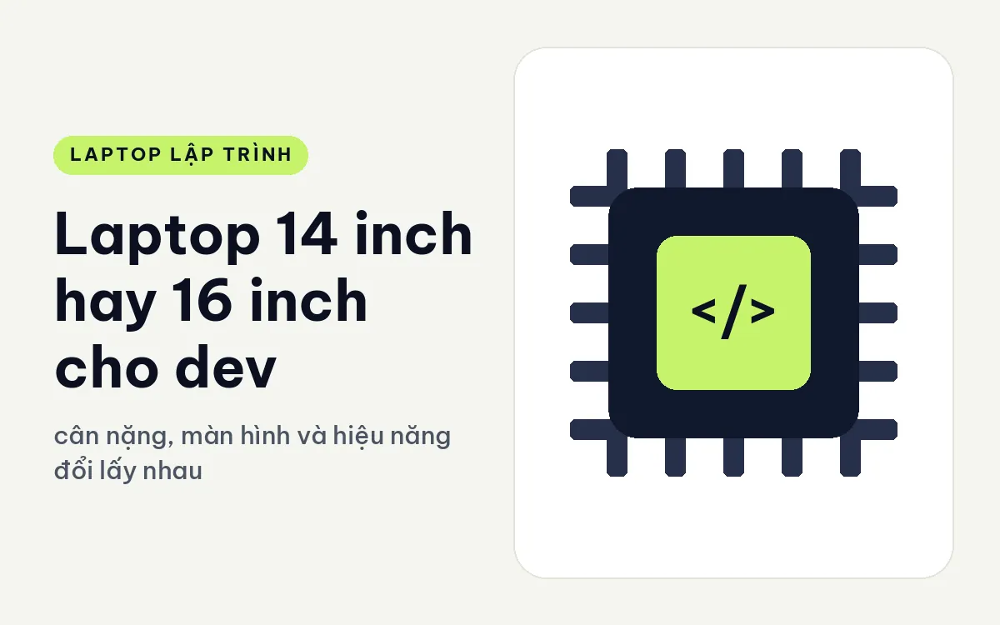
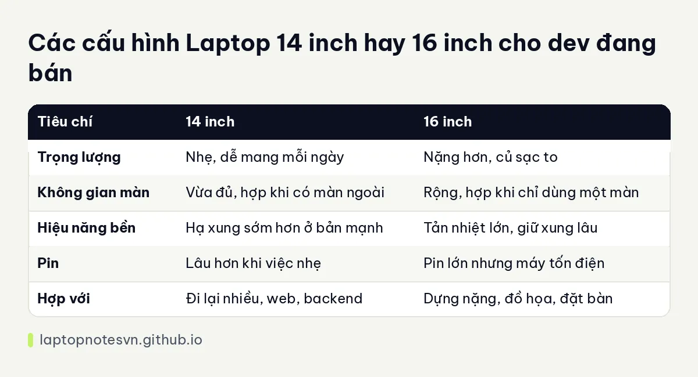

Laptop 14 inch hay 16 inch cho dev - cân nặng, màn hình và hiệu năng đổi lấy nhau thế nào

Chọn kích thước màn hình là quyết định mà bạn sẽ sống cùng suốt vài năm. Máy 14 inch dễ mang, ít chiếm chỗ trong balo, nhưng không gian làm việc chật hơn. Máy 16 inch rộng rãi hơn, thường mạnh hơn, nhưng nặng và dễ khiến bạn ngại mang đi. Không có đáp án đúng cho mọi người, chỉ có đáp án đúng với cách bạn làm việc.
Bài này đặt hai cỡ cạnh nhau theo từng khía cạnh dev quan tâm, rồi đưa ví dụ máy đang bán ở mỗi cỡ. Thông số trọng lượng lấy từ trang sản phẩm.
Cân nặng và khả năng mang đi
Máy 14 inch thường nặng từ dưới 1 kg tới khoảng 1,8 kg tùy cấu hình, mỏng và dễ nhét balo. Bạn có thể mang đi quán cà phê, họp, cơ quan mà không thấy gánh nặng. Máy 16 inch thường nặng từ trên 1,7 kg tới hơn 2,5 kg, cộng củ sạc lớn.
Chênh lệch vài trăm gam nghe nhỏ, nhưng nếu bạn mang máy mỗi ngày, nó cộng dồn thành cảm giác mệt. Nếu bạn chủ yếu đặt máy ở bàn làm việc cố định, trọng lượng lại không còn quan trọng.
Không gian màn hình và độ thoải mái
Màn 16 inch cho không gian rộng hơn rõ rệt: mở IDE, trình duyệt, terminal cạnh nhau mà vẫn đọc được. Với người hay làm việc trên laptop một mình, không có màn ngoài, đây là lợi thế lớn. Bàn phím cũng thường to hơn, có thể có bàn phím số.
Màn 14 inch gọn hơn và đủ cho công việc phần lớn thời gian, nhất là khi bạn thường cắm màn ngoài ở nhà hoặc cơ quan. Phóng chữ vừa phải, dùng màn ảo hay phím tắt chuyển cửa sổ nhanh giúp bù cho không gian nhỏ.
Độ phân giải cũng liên quan. Màn 14 inch độ phân giải cao cho chữ sắc nhưng cần phóng lớn giao diện, nên không gian thực tế không tăng nhiều. Chi tiết về độ phân giải có trong bài màn hình 16 trên 10 và độ phân giải khi code.
Hiệu năng, tản nhiệt và pin
Thân máy 16 inch lớn hơn nên chứa được quạt, ống đồng lớn và pin dung lượng cao. Chip mạnh và card rời thường đi cùng cỡ này vì có chỗ thoát nhiệt. Máy 14 inch cũng có bản mạnh, nhưng thường phải chấp nhận hạ xung sớm hơn hoặc giới hạn công suất.
Về pin, máy 16 inch có pin lớn hơn nhưng màn lớn và chip khỏe cũng tốn điện hơn, nên thời lượng không chắc dài hơn. Máy 14 inch chip tiết kiệm điện thường đi được lâu hơn trong công việc nhẹ.
Một điểm cần nhớ nữa là máy 14 inch hiệu năng cao hiếm hơn và thường đắt hơn trên mỗi đơn vị hiệu năng, vì phải nén phần cứng vào thân nhỏ. Máy 16 inch giữ giá hợp lý hơn nếu bạn cần sức mạnh.
Tóm gọn trong một bảng

| Tiêu chí | 14 inch | 16 inch |
|---|---|---|
| Trọng lượng | Nhẹ, dễ mang mỗi ngày | Nặng hơn, củ sạc to |
| Không gian màn | Vừa đủ, hợp khi có màn ngoài | Rộng, hợp khi chỉ dùng một màn |
| Hiệu năng bền | Hạ xung sớm hơn ở bản mạnh | Tản nhiệt lớn, giữ xung lâu |
| Pin | Lâu hơn khi việc nhẹ | Pin lớn nhưng máy tốn điện |
| Hợp với | Đi lại nhiều, web, backend | Dựng nặng, đồ họa, đặt bàn |
Đối chiếu với máy còn hàng
Ở cỡ 14 inch, Lenovo ThinkPad T14 Gen 7 (2026) nặng từ 1,29 kg, RAM 32GB LPCAMM2 nâng được tới 64GB, độ nảy phím 1,5 mm. Một lựa chọn cân bằng cho người mang máy mỗi ngày.
Ở cỡ 16 inch, DELL XPS 16 DA16260 (2026) dưới 1,7 kg, dày 14,6 mm, chip Core Ultra X9 388H 16 nhân, 32GB RAM LPDDR5X, SSD 1TB. Cỡ lớn nhưng khá gọn so với nhiều máy cùng cỡ, hợp người cần màn rộng mà vẫn đi lại.
Nếu cần màn lớn và sức mạnh hơn, Lenovo ThinkPad P16 Gen 3 - Mobile WorkStation (2025) nặng 2,54 kg với chip HX và card RTX PRO. Máy này nên đặt ở bàn là chính.
Thêm góc nhìn về cỡ máy gọn có trong bài Dell XPS 13 cho lập trình.
Còn phần đánh giá cỡ lớn có ở bài Dell XPS 16 cho lập trình.
Cách chọn khi còn lưỡng lự
Hãy tự hỏi mỗi tuần bạn mang máy ra khỏi nhà mấy lần. Nếu hầu như mỗi ngày, ưu tiên 14 inch, vì sự khó chịu của cái balo nặng cộng dồn nhanh hơn bạn nghĩ. Nếu máy chủ yếu nằm trên bàn và bạn không có màn ngoài, 16 inch cho cảm giác làm việc dễ chịu hơn hẳn.
Hãy hỏi tiếp bạn có định cắm màn ngoài thường xuyên không. Có màn ngoài thì kích thước màn laptop ít quan trọng, và máy nhỏ sẽ có lợi. Cuối cùng, nếu công việc cần chip mạnh chạy lâu, như dựng nặng hay máy ảo, hãy ưu tiên thân máy lớn có tản nhiệt tốt hơn là cố tìm máy nhỏ mạnh.
Đăng ngày 09/11/2026